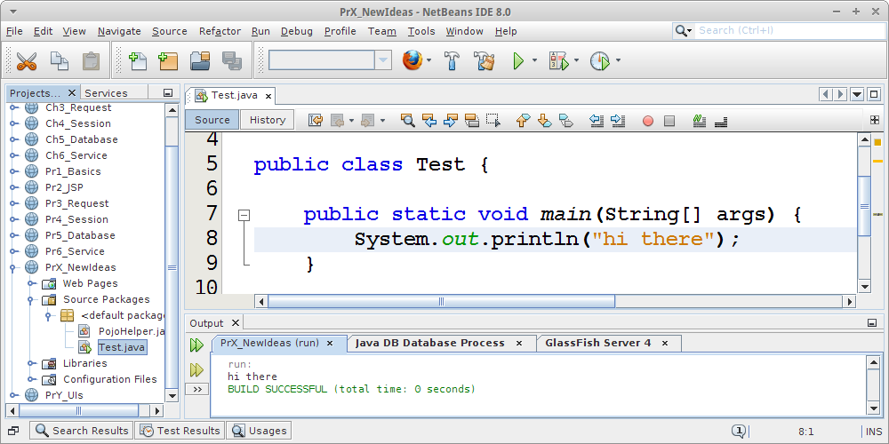
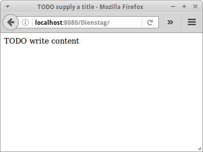
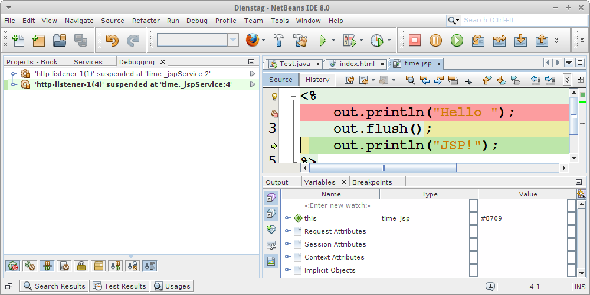

NetBeans
Sobald man sich auf eine Entwicklungsumgebung (IDE) festlegt, und womöglich sogar noch eine Versionsnummer nennt, ist ein Buch automatisch datiert, und zwei Wochen später eigentlich nur noch zum Heizen nützlich. Aber wir wollen es trotzdem wagen.
.
Download and Installation
Der erste Schritt ist NetBeans vom Internet zu laden [1], und auf dem eigenen Rechner zu installieren. Es gibt da mehrere verschiedene Versionen, einmal für verschiedene Betriebssysteme, da sollten wir die Version die für unsereren Rechner geeignet ist nehmen. Aber es gibt auch verschiedene NetBeans IDE Download Bundles und wir wollen das "Java EE" Bündel. NetBeans benötigt die Java JDK Version 7 oder später, falls wir die noch nicht auf unserem Rechner haben, müssen wir die vorher noch installieren. Ansonsten ist NetBeans ganz ähnlich wie Eclipse:

Noch zwei kleine Anmerkungen: immer die englischen Versionen von Software installieren. Die funktionieren wenigstens. Und folgendes zu Updates: da ich nur für mich selbst programmiere und nicht in einer Firma, vermeide ich Updates. Denn solange alles funktioniert gibt es keinen Grund das zu ändern, und ein Update könnte das. Nun in einer Firma ist das etwas anderes, man sollte aber damit rechnen, dass nach einem Update erstmal ein bis zwei Tage gar nichts mehr geht. In der Firma ist das o.k., da wird man ja bezahlt.
.
Get to Know NetBeans
Bevor man mit den Websachen anfängt sollte man mal ein kleines Konsolenprogramm schreiben oder eine kleine Swing Anwendung. Neue Projekte legt man mit "File -> New Project" an, und Java Projekte dann über "Java -> Java Application". Wir können dann mal eine einfache Java Klasse wie oben anlegen. Ausführen kann man die über das große grüne Dreieck oder per "Run -> Run Project".
Etwas gewöhnungsbedürftig sind die NetBeans Shortcuts. Die gehen auch über "Ctrl-Space", aber "System.out.println()" ist jetzt "sout" und "public static void main()" ist jetzt "psvm". Aber die Shortcuts gibts als pdf zum Download [2].
NetBeans hat auch ganz viele Tutorials. Die meisten taugen nichts, aber besser als Eclipse alle mal, denn da gibt's gar keine. Das Swing Tutorial [3] ist ganz o.k. wenn man in der U-Bahn sitzt.
.
Web Project
Um unser erstes Webprojekt anzulegen, gehen wir wieder über "File -> New Project" dieses mal wählen wir aber unter "Java Web" die "Web Application" aus und klicken auf Next. Dann geben wir dem Projekt einen Namen, z.B., "Dienstag" und klicken wieder auf Next. Bei der Serverauswahl würde ich "GlassFish Server 4" verwendet. Ganz selten macht der aber Ärger, dann kann man auch den Tomcat nehmen, geht auch. Dann dürfen wir auf "Finish" klicken, auch wenn wir kein Finisch können. Es wird ein Projekt angelegt und eine HTML Seite namens "index.html". Gestartet wird das Projekt wie oben auch über "Run -> Run Project" oder das grüne Dreieck. Es dauert dann ein bischen, aber früher oder später müsste sich ein Webbrowser, meist Firefox, öffnen und die Seite "index.html" anzeigen.
Warum "dauert" es ein bischen? Das hat damit zu tun, dass mehrere Schritte durchlaufen werden bis man das Resultat im Browser bewundern kann:
- der Server, GlashFish oder Tomcat, wird gestartet, es sei denn er läuft bereits
- das Projekt wird verpackt, auf den Server hochgeladen (in der Regel einfach kopiert) und deployed [6]
- der Browser wird gestartet, falls er noch nicht läuft
- der Browser muss die Seite vom Server laden.
.
Debugger
NetBeans hat auch einen sehr mächtigen Debugger, der auch für Webseiten funktioniert. Dazu muss man zunächst einen Breakpoint in seinem JSP oder Servlet Code setzen (geht nicht mit HTML). Und danach startet man das Projekt im Debug-Modus entweder über "Debug -> Debug Project" oder dem Knopf rechts neben dem grünen Dreieck.
Um den Debugger einmal zu testen, schreiben wir ein paar einfache Zeilen JSP Code. Zum Anlegen einer neuen JSP Datei, klicken wir mit der rechten Maustaste auf das Verzeichnis "Web Pages" in unserem "Dienstag" Projekt, wählen dann "New -> JSP" aus, und nennen die neue Seite "hello". Das ".jsp" wird automatisch angehängt. Dann löschen wir alles was in der Datei evtl. schon steht und fügen die folgenden fünf Zeilen ein:
<%
out.println("Hello ");
out.flush();
out.println("JSP!");
%>
Dann setzen wir einen Breakpoint in der Zeile zwei (out.println()) indem wir einfach einmal mit der linken Maustaste auf die "2" der Zeilennummer klicken. Wir starten dann das Projekt im Debug-Modus und es sollte ein Browser sich öffnen. Der Browser lädt zunächst die "index.html" Seite, wir müssen ihm erst sagen dass er zur
http://localhost:8080/Dienstag/hello.jsp
Seite gehen soll. Sobald wir das tun, sehen wir dass in NetBeans die zweite Zeile grün markiert ist, und wir jetzt auf alle möglichen Knöpfe drücken können. Der Browser allerdings zeigt erst mal gar nichts an, denn der wartet geduldig auf sein Antwort. Wenn wir jetzt mit "Step over (Shift-F8)" zwei Schritte weitergehen, dann erscheint im Browser das "Hello" aber noch nicht das "JSP".
Lustig wird es wenn wir jetzt einen zweiten Browser öffnen, und dort auch zu besagter Seite gehen. Auch die bleibt erst mal im Debugger hängen und wir sehen beide Threads im linken Fenster "Debugging":

Wir können hier zwischen den zwei Threads hin und herspringen, und mal den einen ein paar Schritte laufen lassen und dann den anderen wieder. Man kommt sich ein bischen wie ein Marionettenspieler vor. Obwohl das wie eine Spielerei anmutet, wird das extrem wichtig werden wenn mal "lustige" Sachen passieren, deren Ursache mit Threading zu tun hat.
.
Load Generation
NetBeans hat alle möglichen coolen Sachen, wie z.B. einen Profiler den man mit dem Knopf neben dem Debugger Knopf startet. Der hat dann noch mehr Knöpfe die man drücken kann, und da gibt es dann ganz viele Graphiken mit denen man seine Manager beeindrucken kann.
Was aber viel nützlicher ist, das ist der eingebaute Load Generator, mit dem man Last auf seinem Server verursachen kann. Ein Tutorial das zeigt wie das geht findet sich auf dem NetBeans Website [4]. Es sei allerdings angemerkt, dass das Tutorial ohne ein jMeter Script nutzlos ist, deswegen vielleicht erst mal hier [5] nachsehen wie man ein jMeter Script erzeugt.
.
Referenzen
Zu NetBeans gibt es ganz viele Tutorials, die man ganz einfach über Google findet. Die meisten sind auf dem NetBeans eigenen Website. Anbei noch ein, zwei nützliche Links.
[1] NetBeans IDE, https://netbeans.org/
[2] Highlights of NetBeans IDE 8.0 Keyboard Shortcuts & Code Templates, https://netbeans.org/project_downloads/usersguide/shortcuts-80.pdf
[3] Learning Swing with the NetBeans IDE, http://java.sun.com/docs/books/tutorial/uiswing/learn/index.html
[4] Using a Load Generator in NetBeans IDE netbeans.org/kb/docs/java/profile-loadgenerator.html
[5] Apache JMeter HTTP(S) Test Script Recorder, jmeter.apache.org/usermanual/jmeter_proxy_step_by_step.pdf
[6] Tomcat Web Application Deployment, https://tomcat.apache.org/tomcat-7.0-doc/deployer-howto.html
.